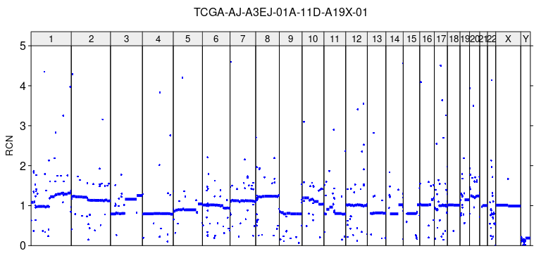
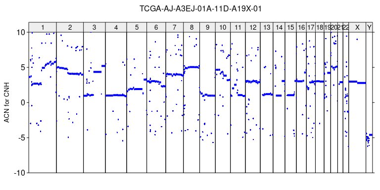
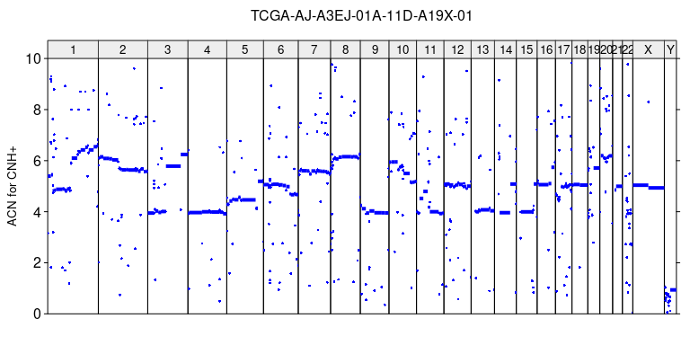
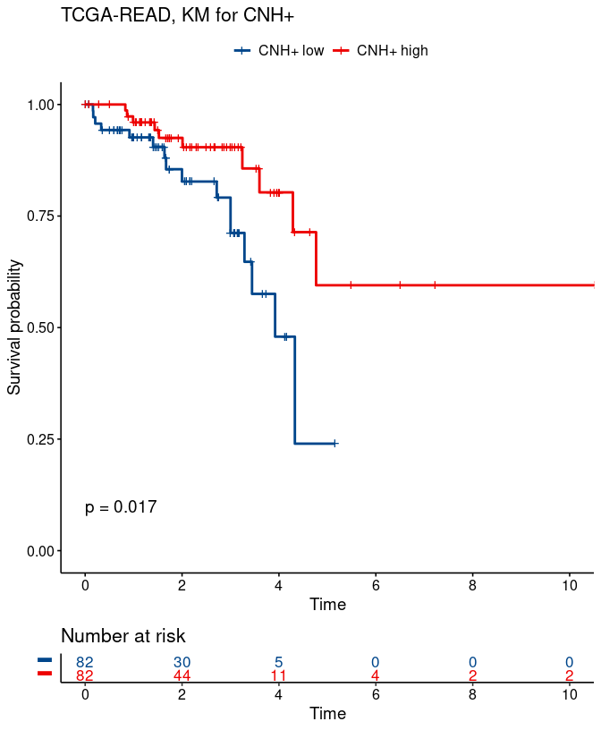

CNHplus: the chromosomal copy number heterogeneity which respects biological constraints
Marian Grendár
05/10/2022
Source:vignettes/CNHplus.Rmd
CNHplus.RmdIntroduction
CNHplus provides R functions for estimating the tumor purity, the tumor ploidy, the Absolute Copy Number (ACN) profile of a tumor and the Copy Number Heterogeneity (CNH) (van Dijk et al. 2021) from the Relative Copy Number (RCN) profile of a sample, by the CNHplus method (Grendár et al. 2022). CNHplus modifies the original CNH method (van Dijk et al. 2021) by imposing the non-negativity constraint on the recovered ACN profile.
CNH and CNH+
(van Dijk et al. 2021) introduced a single-sample method for estimating the Intra-Tumor Heterogeneity from Copy Number Variation (CNV) data, dubbed Copy Number Heterogeneity. The ACN profiles, recovered by CNH, may contain segments with the negative number of copies; cf. (Grendár et al. 2022). CNHplus method, - CNH+, for short, - implemented in CNHplus library, corrects this omission in CNH as it imposes the non-negativity constraint on ACN of tumor in searching for the solution of the optimization problem that defines CNH.
Loading CNHplus
CNHplus and other libraries necessary for illustrating its use should be loaded, at first.
Input data
The RCN profile of a sample, which is the input to CNH computations, can be obtained either by the microarray technology or by shallow Whole Genome Sequencing. The RCN profile data frame should comprise the following variables, at minimum:
SampleChromosomeStartEndSegment_Mean
Note that CNHplus assumes that Segment_Mean is the relative copy number of the segment, not its log2 transformation.
Plotting RCN profile of a sample
In order to reproduce the example from (Grendár et al. 2022), it is necessary to load the RCN data for the TCGA-AJ-A3EJ-01A-11D-A19X-01 sample, which are included in CNHplus.
data(sample_data)
head(sample_data)
#> Sample Chromosome Start End Num_Probes
#> 1 TCGA-AJ-A3EJ-01A-11D-A19X-01 1 61735 356542 29
#> 2 TCGA-AJ-A3EJ-01A-11D-A19X-01 1 404171 15599807 8074
#> 3 TCGA-AJ-A3EJ-01A-11D-A19X-01 1 15600049 16065607 266
#> 4 TCGA-AJ-A3EJ-01A-11D-A19X-01 1 16075128 16153497 54
#> 5 TCGA-AJ-A3EJ-01A-11D-A19X-01 1 16153536 16155010 9
#> 6 TCGA-AJ-A3EJ-01A-11D-A19X-01 1 16165661 16830820 295
#> Segment_Mean
#> 1 -0.6532
#> 2 0.1152
#> 3 0.4350
#> 4 0.8853
#> 5 -1.4492
#> 6 0.9010Next, in order to plot the RCN profile of the sample, it is necessary to prepare the RCN profile (by anti-log2 transforming the Segment_Mean data) and a vector with the widths of the segments.
sa = sample_data
sample_name = sa$Sample[1]
r = 2^sa$Segment_Mean
w = sa$End - sa$Start # should be +1plot_profile function then plots the RCN profile of the sample and saves it to a tiff file with file name specified by sample_name.
# RCN profile plot
plot_profile(sa, r, paste0(sample_name, '_RCN.tiff'),
ylim = c(0,5), ylab = 'RCN')
The function can be used also for plotting the ACN profiles.
Finding CNH+ (and CNH)
CNHplus finds a solution of the optimization problem (4’) from (Grendár et al. 2022) by searching over a grid of pairs of tumor purities and tumor ploidies. The grid can be created by make_grid function.
find_cnhplus function requires the grid and relative copy number profile as input. The number of candidate solutions k can be specified. The function also permits finding the CNH solution of (van Dijk et al. 2021), which ignores the non-negativity of ACN constraint, by turning plus to False.
CNH
CNH estimates of the tumor purity, the tumor ploidy and the CNH value (i.e., kappa):
# ACN profile for CNH
cnh = find_cnhplus(grid, r = r, w = w, k = 2, plus = F)
cnh
#> purity ploidy kappa
#> 1 0.24 2.87 0.1384375
#> 2 0.27 3.86 0.1387208ACN recovered by CNH, can be obtained by r2q function, using the RCN data and the CNH estimates of the tumor purity, the tumor ploidy as the input.
acn_cnh = r2q(r, cnh$purity[1], cnh$ploidy[1])The ACN profile of tumor, recovered by CNH can be plotted by plot_profile function.
plot_profile(sa, acn_cnh, paste0(sample_name, '_ACN_for_CNH.tiff'),
ylim = c(-10,10), ylab = 'ACN for CNH')
The number of copies is negative in numerous segments.
CNH+
By default, find_cnhplus searches for the CNH+ solution.
# ACN profile for CNH+
cnh_plus = find_cnhplus(grid, r = r, w = w, k=2, plus = T)
cnh_plus
#
acn_cnhplus = r2q(r, cnh_plus$purity[1], cnh_plus$ploidy[1])
plot_profile(sa, acn_cnhplus, paste0(sample_name, '_ACN_for_CNHplus.tiff'),
ylim = c(0,10), ylab = 'ACN for CNH+')
Stratification of cancer patients for survival by CNH+
Stratification of patients from a TCGA study for survival by CNH+ can be performed using analyze_TCGA_study function. First, it is necessary to download CNV data from TCGA; we use TCGAbiolinks to download hg19-based segmented CNV data for primary tumor, obtained from Affymetrix SNP Array 6.0 platform.
# TCGA study
study_name = 'READ'
#
query = TCGAbiolinks::GDCquery(legacy = T,
project = paste0('TCGA-', study_name),
data.category = "Copy number variation",
file.type = 'hg19.seg',
platform = "Affymetrix SNP Array 6.0",
sample.type = 'Primary Tumor')
#> --------------------------------------
#> o GDCquery: Searching in GDC database
#> --------------------------------------
#> Genome of reference: hg19
#> --------------------------------------------
#> oo Accessing GDC. This might take a while...
#> --------------------------------------------
#> ooo Project: TCGA-READ
#> --------------------
#> oo Filtering results
#> --------------------
#> ooo By platform
#> ooo By file.type
#> ooo By sample.type
#> ----------------
#> oo Checking data
#> ----------------
#> ooo Checking if there are duplicated cases
#> ooo Checking if there are results for the query
#> -------------------
#> o Preparing output
#> -------------------
# download segmented_scna_hg19 data
TCGAbiolinks::GDCdownload(query = query,
method = 'api', files.per.chunk = 10) #'client') #
#> Downloading data for project TCGA-READ
#> Of the 169 files for download 169 already exist.
#> All samples have been already downloaded
data = TCGAbiolinks::GDCprepare(query = query)
#> Reading copy number variation files
da = as.data.frame(data)
# In order to replicate analyses from (van Dijk et al. 2021) it is necessary to select the subset of TCGA samples that were considered by the authors. To do so, first, read the relevant data from Supplement of (van Dijk et al. 2021) to the R session.
# read in the Supplement to van Dijk et al. with results for tumor samples from TCGA studies
vD = openxlsx::read.xlsx("https://static-content.springer.com/esm/art%3A10.1038%2Fs41467-021-23384-6/MediaObjects/41467_2021_23384_MOESM4_ESM.xlsx")
#Next, select the data from the study_name TCGA study and match them with the CNV data.
# filter samples from the study
vDx = vD %>% filter(Type == study_name)
#
# match vD and TCGA
im = match(vDx$Samplename, unique(da$Sample))
#
# data frame with RCN for the study samples which were considered by van Dijk et al.
da_vD = da %>% filter(Sample %in% unique(da$Sample)[im])
#Analyze the TCGA study. The analysis involves finding CNH+ solution for every sample from the study. By default, only the CNH+ solutions are sought. It takes a time; even more so when both CNH+ and CNH are computed. This is why the code below is cached to save time when re-running this vignette.
# grid has already been prepared, above
#
# analyze TCGA study
oo = analyze_TCGA_study(study_name, da_vD, grid, k=2)
#The function invisibly saves csv file with the results; i.e., CNH+, purity, ploidy for each sample.
Function plot_survival can be used for plotting the Kaplan-Meier survival functions for two groups of samples from TCGA study: those with CNH+ below or equal to the median vs. samples with CNH+ above median.
# read in the results file for the study
res = read.csv(paste0(study_name, '_results.csv'))
# match samples from results file and the survival data in vDx
im_vDx_res = match(vDx$Samplename, res$sample)
# KM for two groups; below/above median CNH+
gg_cnhplus = plot_survival(study_name, vDx$OS, vDx$OS_event,
res$cnh_plus[im_vDx_res],
type = 'CNH+', ylim = c(0, 1))
gg_cnhplus